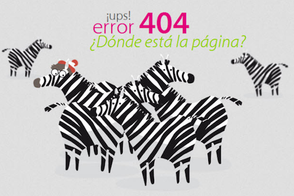
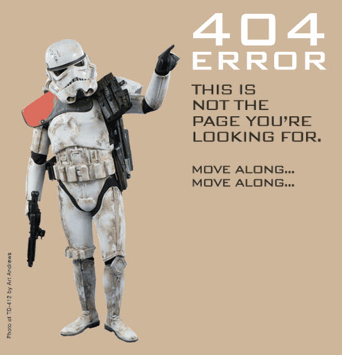

Tue, 21 Sep 2010 04:50:00 · 404 · Error · Design · webdesign
35 Entertaining 404 Error Pages
Now for something completely different… a collection of hilarous 404 Error pages.
 
For some more awesomeness, hop here - Enjoy! (^.^)